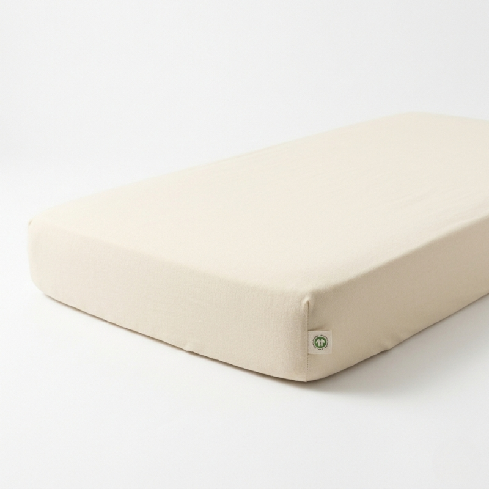
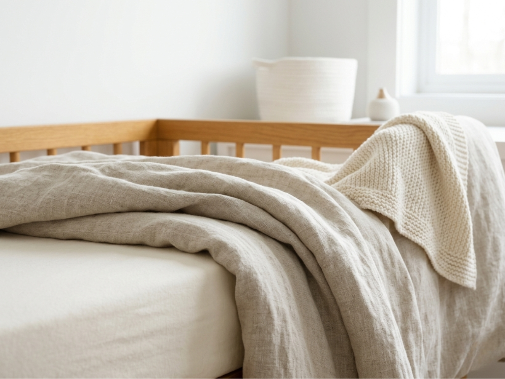
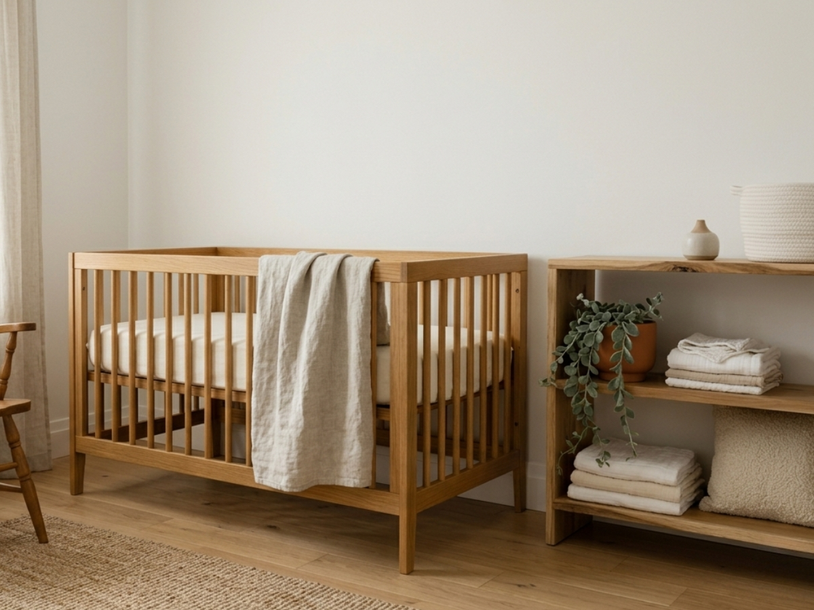
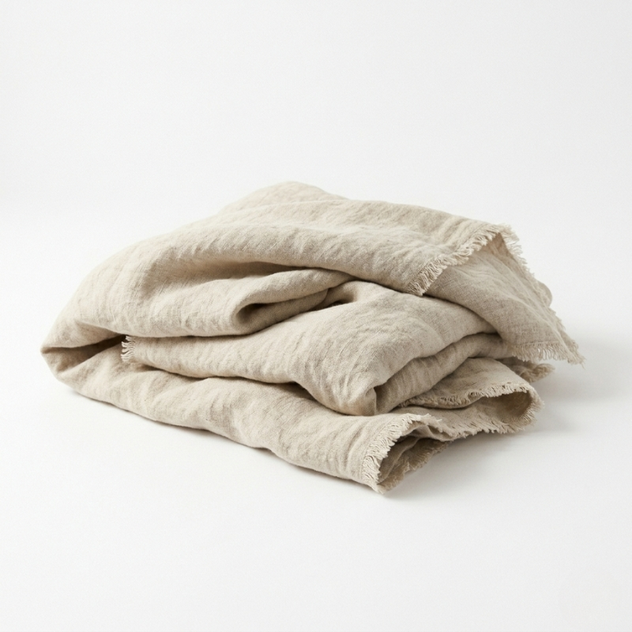
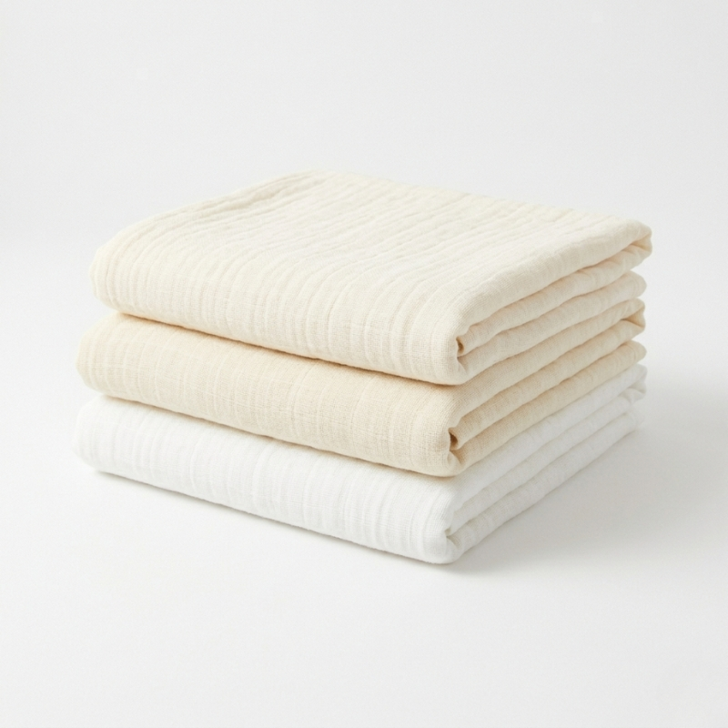
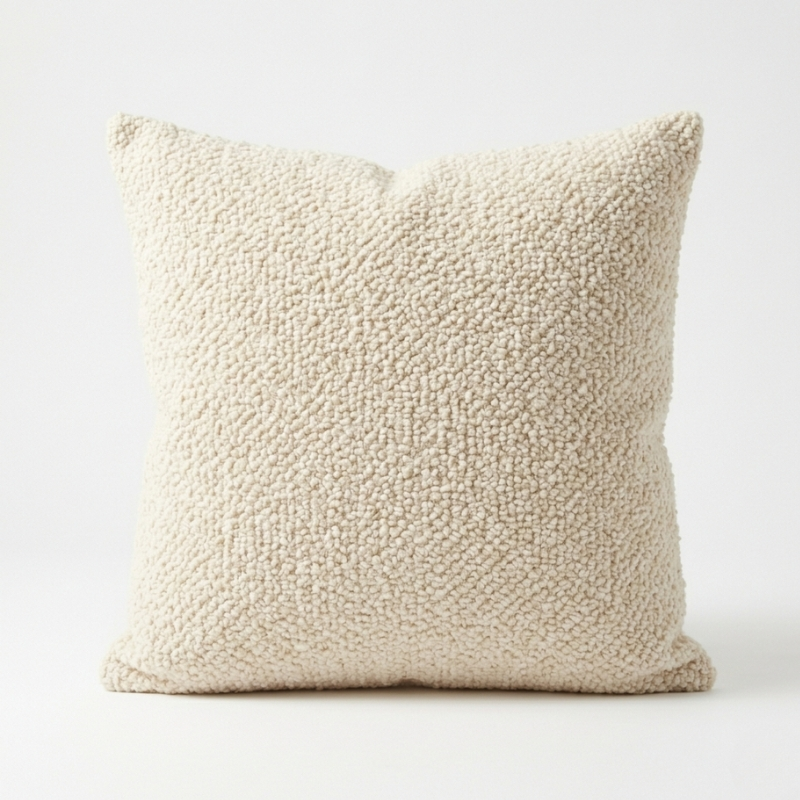

GOTS Organic Fitted Sheet
Certified organic cotton in warm ivory
View ProductAs an affiliate, we may earn a commission from qualifying purchases at no cost to you. This helps support our curated sanctuary.
A curation of the finest organic cotton and linen pieces from specialist brands across Europe.

In the delicate first months of life, fabric becomes more than decoration — it's your baby's first experience of texture, temperature, and comfort. The right textiles breathe with your child, regulate temperature naturally, and grow softer with each wash. We believe in materials that honor both the purity of newborn skin and the discerning eye of design-conscious parents.
Breathability is paramount. Natural fibers like organic cotton and European linen allow air to circulate, preventing overheating during sleep. These materials also possess natural moisture-wicking properties, keeping your baby comfortable throughout the night while maintaining the elegant aesthetic that makes a nursery feel like a sanctuary rather than merely functional space.
Not all natural fibers are created equal. Here's our considered ranking of materials that balance luxury, functionality, and safety for the modern nursery.
The gold standard. Grown without pesticides, processed without harmful chemicals, and certified by Global Organic Textile Standard. Gets softer with every wash while maintaining its structure and breathability.
European flax that's been stonewashed for immediate softness. Exceptionally breathable and temperature-regulating, with a relaxed texture that brings organic elegance to any nursery.
Naturally antimicrobial and incredibly soft, bamboo offers silk-like smoothness with superior moisture management. Choose OEKO-TEX certified options for peace of mind.
The gentle giant of baby textiles. Loose weave provides exceptional breathability while the multiple layers create softness that's perfect for swaddling and comfort.
Layering different textures creates depth without visual chaos. Start with a foundation — perhaps stonewashed linen sheets — then build with complementary textures in a tonal palette. A waffle-weave blanket adds dimensional interest, while a smooth cotton fitted sheet provides the perfect contrast.
Color coordination becomes effortless when working within one material family. Organic cotton in ivory, cream, and warm white creates a sophisticated gradient that feels intentional rather than accidental. The key is varying the weave and weight while maintaining tonal harmony.
The softest nursery isn't about thread count — it's about choosing materials that honor both comfort and conscience.
— Materials Philosophy

These carefully curated textiles represent the pinnacle of softness, sustainability, and style for the conscious nursery.
Finest Natural Textiles

Certified organic cotton in warm ivory
View Product
European flax in natural oatmeal
View Product
Organic cotton muslin, set of three
View Product
Textured cotton-linen blend in cream
View Product"In choosing the finest textiles for our children, we're not just creating comfort — we're weaving our values into the very fabric of their first home."Closing Note — Velvet & Cradle
Receive weekly curated nursery inspiration and exclusive early access to our designer guides directly in your inbox.